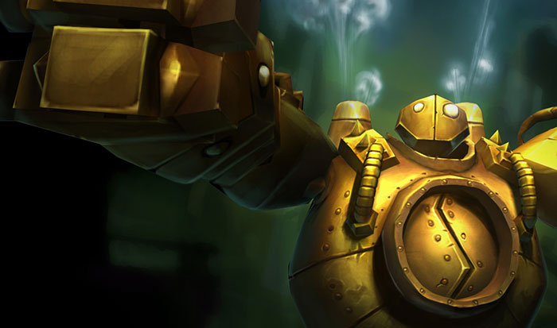

Blitzcrank es un personaje del famoso juego League of Legends. Pero antes de hablar de él... ¿Qué juego es ese?
League of legends
League of Legends, también conocido por sus siglas LoL, es un videojuego de género MOBA ("Multiplayer Online Battle Arena"), desarrollado y publicado por Riot Games para Microsoft Windows y OS X.
Se trata de un juego multijuador online y gratis. League of Legends fue bien recibido al principio, y ha ido ganando popularidad año tras año. Según un artículo de la revista Forbes, League of Legends fue el juego de PC más jugado en América del Norte y Europa, comparando el número de horas jugadas. En enero de 2014, más de 67 millones de personas jugaban a este juego al mes, 27 millones por semana y más de 7,5 millones al día.
El juego está inspirado en el popular mapa personalizado del Warcraft III, Defense of the Ancients: Allstars(abreviado normalmente con las siglas DotA) diseñado por Steve «Guinsoo» Feak y Steve «Pendragon» Mescon, el cual a su vez está basado en el escenario de StarCraft «Aeon of Strife».
Blitzcrank
El Gran Gólem de Vapor

La ciudad de Zaun es un lugar en el que tanto la magia como la ciencia están fuera de control. El carácter desenfrenado de la experimentación ha pasado factura a la ciudad. Así y todo, las indulgentes restricciones de sus fueros dan libertad de acción a los investigadores y los inventores para que fuercen los límites de la ciencia, para bien o para mal. Así, un equipo de doctorandos de la Facultad de Tecmaturgia de Zaun logró realizar un avance revolucionario en el campo de la automatización inteligente por vapor. Su creación, Blitzcrank, un gólem de vapor, fue desarrollada para tomar decisiones de forma inmediata a fin de aligerar el proceso de reciclaje de residuos peligrosos de Zaun, ya que a menudo no era posible que un humano lo supervisara todo. No obstante, el ingenio pronto empezó a mostrar un comportamiento inesperado.
Con el tiempo, los científicos concluyeron que la criatura tenía capacidad de aprendizaje, de modo que Blitzcrank no tardó en saltar a la fama. Por desgracia, como es habitual en estos casos, el mérito de su creación se lo llevó otro, el profesor Stanwick Pididly, aunque ahora casi todo el mundo conoce la verdad. Tras los caóticos trámites burocráticos de turno, era un secreto a voces que en el fondo ninguna de las partes velaba por los intereses del gólem de vapor, por lo que Blitzcrank solicitó humildemente que se le permitiera obrar con autonomía. Apoyado unánimemente por el pueblo, al Consejo de Zaun sólo le hicieron falta unas pocas semanas para declarar a Blitzcrank una entidad consciente y completamente independiente. El gólem, un ser sin igual, abandonó Zaun angustiado por la polémica y sintiendo que no existía ningún sitio donde pudiese encajar. Su periplo lo llevó hasta el único lugar de Valoran en el que tienen cabida los seres singulares: la Liga de Leyendas. Por suerte, no tuvo problemas para adaptar su diseño de cara a los peligros a los que habría de enfrentarse en los Campos de la Justicia.
Aunque Blitzcrank pueda triturar cualquier obstáculo que se interponga en su camino, tiene un corazón de oro... atornillado a un armazón de hierro... protegido por un caparazón de acero.